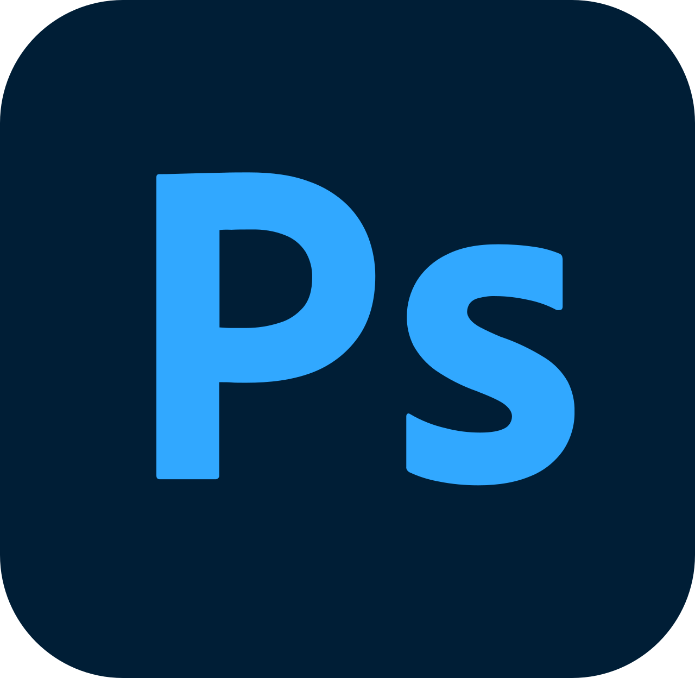
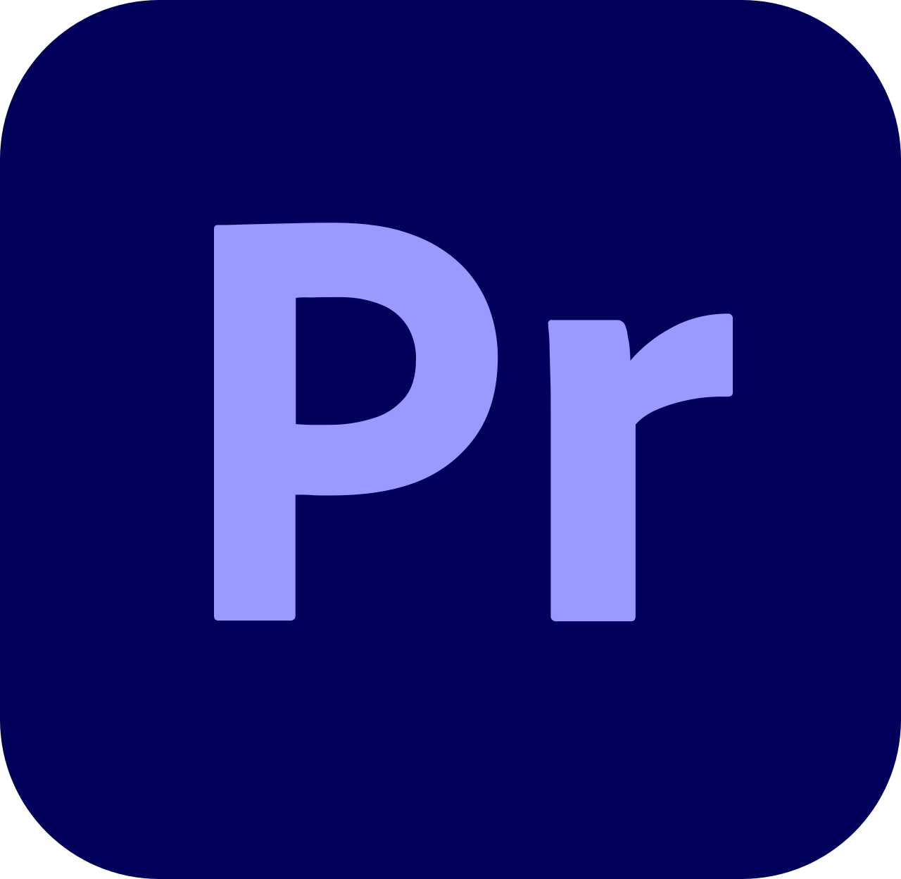

BA (Hons) Digital Media Production Graduate
Tony Lin.
I'm a creative professional with a passion for design, digital media editing, and video editing. I enjoy turning ideas into engaging visual content, combining strong aesthetics with thoughtful storytelling across different mediums.

About Me
I'm a BA (Hons) Digital Media Production graduate with a focus on video editing, visual communication and creative digital work.
My work focuses on video editing and digital media production, with an interest in visual storytelling, pacing and creating engaging content.
I also have experience in image editing and enjoy experimenting with composition, colour and visual presentation across different digital formats.
Skills
- Video Editing
- Image Editing
- Website Design
- Photo Editing
- Digital Media
Equipment
- D3400 Camera
Software
-

Adobe Photoshop -
 Adobe Lightroom
Adobe Lightroom
-

Adobe Premiere Pro -
 Adobe Express
Adobe Express
CONTACT